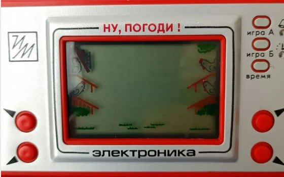
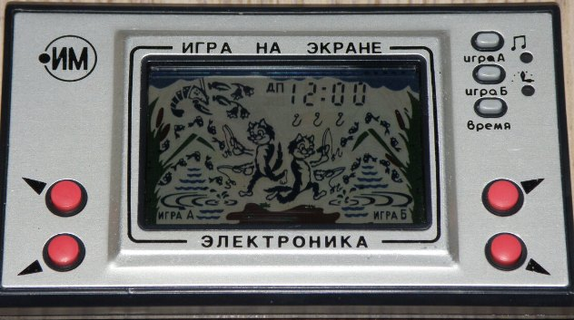
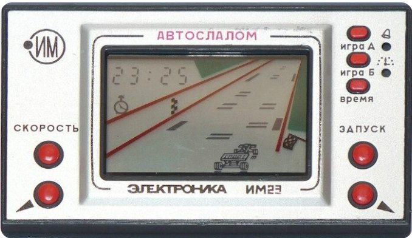
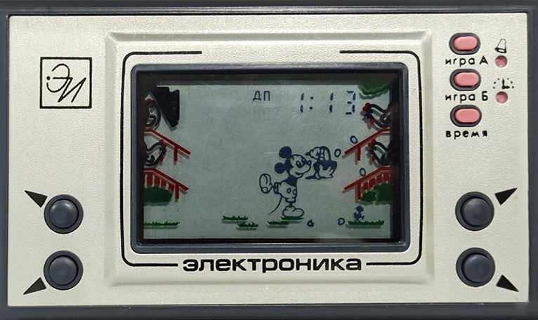
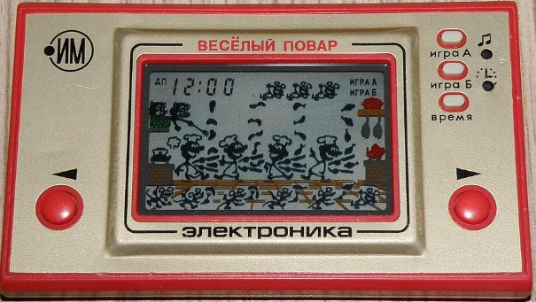
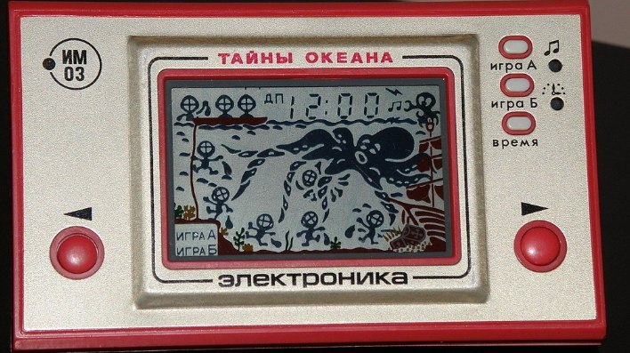

Aleksej Pažitnov scrisse Tetris nel 1984 su un Elektronika-60 mentre lavorava al Centro di Calcolo dell'Accademia delle Scienze dell'URSS, e quel gioco continua a comparire in ogni classifica dei «videogiochi più influenti di tutti i tempi». In quello stesso anno, il 1984, Pac-Man era in vendita negli USA per il quarto anno di fila, e in Giappone Nintendo si preparava a esportare il NES. Nello stesso anno due studenti britannici scrissero Elite sullo ZX Spectrum, con generazione procedurale di otto galassie in 22 kilobyte di memoria.
All'inizio del 1992 l'URSS non esisteva più. Tetris divenne proprietà di Nintendo attraverso una catena di intermediari, e nei dieci anni successivi non comparve nessun altro gioco sovietico di livello mondiale, anche se singoli studi realizzarono buoni progetti — gli anni '90 li conto come eredità sovietica. Ma ecco una domanda che mi sembra molto più interessante di «perché è andata così»: come poteva uno stesso paese, nello stesso momento, progettare il sistema di guida del Buran con atterraggio automatico su radiofari, e al tempo stesso non fare una macchina arcade di massa al livello di Space Invaders?
In risposta ho sentito spesso «non c'era mercato, non c'era capitalismo, non c'era concorrenza». Non ci credo. Non ci credo perché l'assenza di mercato non impedì a quelle stesse persone di progettare l'Energija-Buran, il Tu-160 e il rompighiaccio nucleare Arktika. Eppure un televisore di massa di qualità, il Rubin, nello stesso paese non si riusciva a farlo. E nemmeno un gioco di massa di qualità.
Non serve essere un game designer navigato che sa cosa sono ECS e GOAP; basta capire che un gioco è un prodotto assemblato da codice, grafica, audio, game design e testing, e che ciascuno di questi rami richiede persone diverse con competenze diverse. Quel che segue è un po' di aritmetica e qualche esempio storico.
Il gioco è una grande impresa ingegneristica
C'è un mito persistente secondo cui i giochi sono fatti da «squadre creative». È vero esattamente nella misura in cui una navicella spaziale è fatta da «progettisti creativi», e qualsiasi gioco al livello di Doom, Half-Life o Witcher 3 è prima di tutto un prodotto ingegneristico. La parte creativa ovviamente c'è, e occupa una quota non piccola dello sforzo totale, ma il resto sono compilatori, renderer, motori fisici, sistemi di serializzazione dei salvataggi, codice di rete, strumenti per gli artisti, pipeline di conversione degli asset e test su configurazioni diverse.
Quando si dice «Doom l'ha fatto John Carmack», non si intende un artista né uno sceneggiatore, ma il programmatore che ha capito come renderizzare uno pseudo-3D su un processore 386 senza coprocessore in virgola mobile. Quando si dice «GTA III ha cambiato l'industria», non si intende la trama sulla mafia, ma il motore che per la prima volta ha reso possibile lo streaming continuo di una città aperta con auto, pedoni, fisica delle collisioni e stazioni radio, senza sbattere contro i 32 megabyte di memoria della PS2.
Un gioco come sistema ingegneristico è organizzato all'incirca così (molto semplificato):
GIOCO
│
┌─────────────────┼─────────────────┐
▼ ▼ ▼
MOTORE CONTENUTI PIPELINE
│ │ │
┌────┼────┐ ┌─────┼─────┐ ┌────┼────┐
▼ ▼ ▼ ▼ ▼ ▼ ▼ ▼ ▼
render phys net models sound design editor conv CI/CD
│ │ │ │ │ │ │ │ │
e ognuno di questi punti è un sottosistema a sé
che va progettato, scritto, testato
e mantenuto per l'intero ciclo di sviluppoMa togli un ramo qualsiasi da questo schema e non c'è più il gioco. Non «un gioco peggiore», ma nessun gioco. Senza renderer non c'è immagine. Senza editor di livelli gli artisti non riescono ad assemblare nemmeno una stanza. Senza sistema di build la build non arriva ai tester e crasha per un giocatore su due, perché anche i programmatori sono persone — si stancano, dormono poco, si portano in ufficio i propri problemi e scrivono codice goffo e pieno di bug, anche loro. Ciascuno di questi rami è il lavoro di persone di un certo livello di competenza, di cui nella popolazione ce ne sono più o meno quante ce ne sono, e non diventano più numerose solo perché lo desideravi tanto.
Da dove vengono gli sviluppatori di talento

Qui forse dirò una cosa spiacevole, e qualche lettore chiuderà l'articolo e andrà a leggere qualcosa di più patriottico e allegro, ma senza questo non ha senso proseguire. Un ingegnere di talento non è il risultato, né una funzione, di una buona istruzione — anche se un'istruzione è ovviamente auspicabile, perché aiuta a spingersi oltre i propri limiti e a inventare qualcosa di nuovo. Una buona istruzione può trasformare una persona di talento in un buon specialista, ma se la materia prima non c'è, nessuna istruzione aiuterà.
È semplicemente la mia osservazione di team di ingegneri di più di dieci persone. Tre fanno due terzi del lavoro vero, e gli altri fanno tutto il resto. Questa proporzione si riproduce in qualsiasi paese, qualsiasi azienda e qualsiasi epoca, purché non si prenda la gente a bastonate.
La quota di persone capaci di progettare autonomamente un sistema ingegneristico complesso è intorno a mezzo punto percentuale della popolazione, in una stima ottimistica — potrei sbagliarmi. Non «cinque per cento delle persone istruite» e non «due per cento di quelli dell'IT», ma mezzo per cento di tutti i viventi in assoluto, neonati, burocrati e pensionati inclusi. Non è un problema della società né il risultato di una qualche segregazione; è semplicemente la distribuzione delle capacità, che funziona allo stesso modo in Giappone, in Nigeria o in Finlandia, e la Russia non fa eccezione.
Da questo mezzo per cento c'è un'ulteriore selezione per specializzazione, e la quota di chi è capace di scrivere un renderer al livello di id Tech o un motore fisico al livello di Havok è già di poche migliaia di persone sull'intero pianeta. Queste persone si possono elencare per nome; i grandi studi le conoscono tutte, le tengono nei loro database di curriculum e danno loro la caccia, offrendo stipendi da top manager.
L'aritmetica dell'industria dei videogiochi nell'URSS
Prendiamo ora l'URSS della fine degli anni '80 — il periodo in cui l'industria occidentale dei videogiochi si era già formata, mentre una sovietica avrebbe potuto teoricamente comparire. La popolazione dell'URSS era di circa 290 milioni di persone; aggiungici i paesi del Comecon (Germania Est, Polonia, Cecoslovacchia, Ungheria, Bulgaria) — altri circa 110 milioni. In totale il blocco socialista fa circa 400 milioni di potenziali consumatori e potenziali sviluppatori.
La quota di persone in linea di principio capaci di lavorare come programmatori di videogiochi al livello del 1990 è nella migliore delle ipotesi qualche punto percentuale della popolazione in età lavorativa con istruzione tecnica. Di questi, la quota di quelli di talento e competenti, capaci di risolvere autonomamente un problema ingegneristico non banale, è quello stesso mezzo per cento della popolazione. Poi da queste persone bisogna sottrarre chi lavora nella difesa (e questi sono i migliori, davvero i migliori, e un sottomarino non si progetta da solo), chi lavora nello spazio (anche loro i migliori, e il Buran insieme al Luna-24 e ai precedenti ne sono la prova), chi scrive compilatori per le macchine BESM ed Elbrus, chi si occupa di calcolo scientifico negli istituti dell'Accademia delle Scienze e in altri uffici di progettazione, istituti di ricerca e centri tecnici.
Nel residuo secco, ciò che resta per un'ipotetica industria dei videogiochi è una risorsa di circa qualche migliaio di persone in tutto il campo socialista, di cui una manciata raggiunge il livello necessario per creare autonomamente un gioco commerciale non dico di livello mondiale ma semplicemente pan-sovietico. E questo a condizione che tutte queste persone sappiano perfino che i giochi esistono come industria, che vogliano farlo e che abbiano accesso a hardware aggiornato per lo sviluppo. Molti non lo sapevano, non lo volevano e non lo avevano.
Calcolo sulle dita (1989):
Blocco socialista: ~400 mln di persone
Popolazione in età lavorativa: ~250 mln
Con istruzione tecnica: ~25 mln
Programmatori di qualsiasi
livello: ~500 mila
Programmatori di talento: ~50 mila
Liberi dai settori
strategici: ~5 mila
Consapevoli dell'esistenza
dell'industria videoludica: ~500
Con accesso a hardware
aggiornato per lo sviluppo: ~50
Realmente in grado di fare
un gioco commerciale: ~10
L'Occidente nello stesso
periodo: ~800 mln
moltiplica tutto il resto per circa 4, perché 4 vedi sottoE molto probabilmente avete sentito parlare di queste persone o le conoscete: Aleksej Pažitnov, Tetris (1984);
Nikolaj Lebedev (da non confondere con il regista) e il team di ParaGraph; Nikita Skripkin, fondatore di Nikita Ltd. (1991); Andrej Kuzmin (K-D Lab, 1996); Andrej «Maddox» Medoks — un tipo dei simulatori di volo che già nel 1990 faceva simulatori amatoriali, ancora lontano da IL-2 ma gettava le fondamenta; János Kiss e il team di Novotrade (Ungheria). Quindi semplicemente non ci sono decine di nomi specificamente sovietici al 1990 — c'è Pažitnov, un paio di persone attorno a lui, e un potenziale che si realizza solo nella seconda metà degli anni '90, già in un paese completamente diverso e in un'economia diversa.
Non sono le macchinazioni dei nemici, non un «sistema marcio», e non un'«assenza di capitalisssmo». L'ho semplicemente stimato sulle dita, e confrontiamo i conti nei commenti se non siete d'accordo. Semplicemente non hai abbastanza persone con le qualifiche giuste per fare razzi, rompighiaccio, reattori e videogiochi tutti allo stesso tempo. Bisogna scegliere, ed è chiaro che in condizioni di confronto freddo la scelta non è caduta a favore dei videogiochi.
La guerra per i talenti

Negli USA nel 1989 la popolazione era di circa 250 milioni, e l'industria dei videogiochi prese forma soprattutto in California, in Texas e a Seattle a partire da persone arrivate da tutto il mondo. Sid Meier è americano, Gabe Newell è americano. Il fondatore di Nvidia, Jensen Huang, è un taiwanese emigrato negli USA da bambino. Il creatore di Unreal Engine, Tim Sweeney, è americano, ma il team di Epic Games è composto da persone di oltre trenta paesi. Igor Sikorsky, che con i giochi non c'entra nulla ma illustra il meccanismo generale — uno dei padri dell'aviazione a elicottero del XX secolo — lasciò anche lui l'Impero russo per gli USA, e lì la sua azienda costruì la Sikorsky Aircraft.
Aggiungici il Giappone con il suo contingente. Shigeru Miyamoto, che ideò Mario, Zelda e quasi tutto ciò che Nintendo pubblicò in trent'anni, e Hideo Kojima con Metal Gear Solid, e Hironobu Sakaguchi con Final Fantasy, e altre cento persone di un livello leggermente inferiore. Questo è al tempo stesso il risultato della cultura giapponese (suriawase e kaizen) in senso ampio, e il risultato del fatto che il Giappone degli anni '80 si ritrovò con una massa critica di ingegneri di talento a cui capitò tra le mani hardware economico e accessibile (il Famicom, l'MSX, le sale giochi) e la possibilità di vendere quell'hardware sul mercato mondiale.
L'Europa aggiunse Peter Molyneux, i polacchi di CDPR, gli svedesi di DICE e i finlandesi di Remedy. Ciascuno di questi studi è una concentrazione locale di talento cresciuta in modo naturale. Nel complesso il blocco occidentale aveva a disposizione non «il doppio delle persone» ma decine di volte più persone del livello giusto, perché, primo, la popolazione era più grande, e secondo, e questa è la cosa principale, i talenti di tutto il mondo venivano a lavorare lì — dall'India, dalla Cina, dall'Europa orientale, da quella stessa ex URSS. La Silicon Valley non è un fenomeno americano; è un aspirapolvere globale che raccoglie i migliori ingegneri del pianeta in un unico punto geografico, e quell'aspirapolvere ha dato il moltiplicatore ×4 che ho menzionato sopra.
Con cosa ci siamo ritrovati

Per correttezza va detto che dei giochi in URSS si facevano, e alcuni erano anche piuttosto buoni sul piano tecnico. Tetris è ovviamente l'esempio principale; si può ricordare anche l'«Elektronika IM-02 "Nu, pogodi!"», che era una copia del Game & Watch di Nintendo ed era fatta dall'Istituto di Ricerca per la Tecnologia Elettronica di Zelenograd. Era fatta con competenza tecnica, ma proprio perché era una copia e non un progetto originale. Il BK-0010 (in parte un PDP-11) e l'Agat (compatibile con l'Apple II) avevano una piccola libreria di giochi fatti in casa, perlopiù cloni di successi occidentali.
Dopo il 1991 tutta questa infrastruttura, che aveva iniziato ad attecchire, crollò, e i programmatori se ne andarono: alcuni nelle banche, a scrivere sistemi di pagamento; altri emigrarono (anche Sergey Brin e i fondatori di molti studi occidentali vengono da quell'ondata); altri ancora andarono a commerciare ai mercati e a fare la spola con le pellicce dalla Turchia. Chi restò nel settore fece o localizzazioni di giochi occidentali o progetti di nicchia per il mercato post-sovietico (Fargus, 7th Wolf, Triada, Buka).
Ma anche quel periodo diede all'industria parecchi progetti brillanti: Hard Truck (Dalnobojščiki), Space Rangers, le serie Sea Dogs (Korsary) e Cossacks, Turgor, IL-2 Sturmovik, Rage of Mages (Allods), Vangers, Perimeter e S.T.A.L.K.E.R., che divenne, probabilmente, l'unico gioco in lingua russa degli anni 2000 a guadagnarsi un riconoscimento davvero mondiale. Qui si può includere anche la serie Metro di 4A Games, anche se 4A è ormai una storia ucraina nata da GSC negli anni 2000, ma ci lavorarono anche parecchi ragazzi da tutto lo spazio post-CSI, e anche Saber diede una mano con lo sviluppo del motore.
Gamedev russo e post-sovietico (quello che ho ricordato e a cui ho giocato io stesso):
URSS (prima del 1991)
1984 — Tetris (Aleksej Pažitnov)
anni '80 — "Nu, pogodi!" (IM-02)
anni '80 — giochi su BK-0010, Agat, MK-90 (perlopiù cloni e port)
anni '90
1996 — Vangers (K-D LAB)
1996 — Russian Roulette (Logos)
1997 — Parkan (Nikita)
1997 — MadSpace (Maddox Games)
1998 — Z.A.R. (Maddox Games)
1998 — Rage of Mages / Allods: Seal of Mystery (Nival)
1998 — Hard Truck / Dalnobojščiki (1C)
1999 — Rage of Mages II / Allods: Lord of Souls (Nival)
anni 2000
2000 — Sea Dogs (Akella) — la base della serie Korsary
2001 — Cossacks: European Wars (GSC Game World)
2001 — IL-2 Sturmovik (Maddox Games)
2002 — Space Rangers (Elemental Games)
2003 — Blitzkrieg (Nival)
2004 — Space Rangers 2 (Elemental Games)
2004 — A.I.M. / Mechanoids (SkyRiver Studios)
2004 — Perimeter (K-D LAB)
2005 — Ex Machina (Targem)
2005 — Brigade E5: New Jagged Union (Apeiron)
2005 — Pathologic / Mor. Utopia (Ice-Pick Lodge)
2006 — Heroes of Might & Magic V (Nival)
2006 — Age of Pirates / la linea Korsary (Akella)
2007 — S.T.A.L.K.E.R.: Shadow of Chernobyl (GSC Game World)
2007 — 7.62 (Apeiron)
2007 — TimeShift (Saber Interactive)
2007 — X-Blades (Gaijin)
2008 — S.T.A.L.K.E.R.: Clear Sky (GSC)
2008 — King's Bounty: The Legend (Katauri)
2009 — S.T.A.L.K.E.R.: Call of Pripyat (GSC)
2009 — Man of Prey / Maroder (Apeiron)
2009 — Turgor (Ice-Pick Lodge)
2009 — Cryostasis (Action Forms)
anni 2010
2010 — Metro 2033 (4A Games)
2010 — World of Tanks (Wargaming)
2010 — Cut the Rope (ZeptoLab)
2010 — Apache: Air Assault (Gaijin)
2011 — Metro: Last Light (4A Games)
2012 — Blades of Time (Gaijin)
2013 — War Thunder (Gaijin Entertainment)
2013 — The Void (Ice-Pick Lodge)
2015 — World of Warships (Wargaming)
2016 — Escape from Tarkov (Battlestate Games)
2016 — Crossout (Targem Games)
2016 — Homescapes (Playrix)
2016 — Survarium (Vostok Games)
2018 — Pathfinder: Kingmaker (Owlcat Games)
2019 — Metro: Exodus (4A Games)
2019 — Pathologic 2 (Ice-Pick Lodge)
2021 — Pathfinder: Wrath of the Righteous (Owlcat Games)
anni 2020
2023 — Atomic Heart (Mundfish)
2024 — S.T.A.L.K.E.R. 2 (GSC Game World)È più o meno tutto ciò che si può definire significativo a livello mondiale in 35 anni. Per fare un confronto: nel solo 2007 uscirono BioShock, Portal, Mass Effect, Call of Duty 4, Crysis, Halo 3, Assassin's Creed e The Witcher — più cinquanta buoni giochi di un livello inferiore.
2007 (Mondo)
BioShock (2K Games)
Call of Duty 4: Modern Warfare (Activision)
Halo 3 (Microsoft)
Mass Effect (BioWare)
Assassins Creed (Ubisoft)
Crysis (Crytek)
Half-Life 2: Episode Two + Portal + Team Fortress 2 (Valve)
Super Mario Galaxy (Nintendo)
The Legend of Zelda: Phantom Hourglass (Nintendo)
Metroid Prime 3: Corruption (Nintendo)
Uncharted: Drake's Fortune (Sony)
Ratchet & Clank Future: Tools of Destruction (Sony)
God of War II (Sony)
Gears of War (versione PC)
Need for Speed: ProStreet (EA)
FIFA 08, Madden NFL 08, NBA 2K8 (2K)
Guitar Hero III: Legends of Rock (Activision)
The Simpsons Game (EA)
Tony Hawks Proving Ground (Activision)
The Witcher (CDPR)
World in Conflict
Company of Heroes: Opposing Fronts
Painkiller: Overdose
Hellgate: London
Two Worlds
Overlord
Stranglehold
Kane&Lynch: Dead Men
Clive Barkers Jericho
Blacksite: Area 51
Sega Rally RevoSe si guarda la prima lista, è chiaro che i giochi post-CSI significativi sono quasi sempre opera di una piccola squadra in cui si riconoscono chiaramente una, due o tre persone chiave di talento, e il gioco esiste esattamente finché quelle persone continuano a farlo. Come Ice-Pick Lodge con Nikolaj Dybovskij, o 4A Games con il team Maksimčuk + Prohorov + Šiškovcov — e anche il resto degli studi raramente superava le venti persone.
Questa non è un'industria nel senso dell'industria occidentale, dove ci sono centinaia, se non migliaia, di studi che competono tra loro e travasano dipendenti da un progetto all'altro. Questa è una dozzina di studi, ciascuno retto da uno o due giochi e dieci persone, e se una persona si stanca o se ne va, lo studio scompare. È esattamente quello che dice l'aritmetica. C'è poco talento, non c'è nessuno a concentrarlo in un punto, il mercato non è abbastanza grande da creare concorrenza per queste persone, e di conseguenza ogni gioco di successo è un risultato personale di una persona specifica, non il frutto del lavoro di un'industria matura.
Sogni di sostituzione delle importazioni

Ultimamente saltano fuori periodicamente idee sul fatto che dobbiamo fare i nostri grandi giochi, il nostro motore di gioco, la nostra piattaforma di distribuzione. Dal punto di vista di quella stessa aritmetica sulle dita, la cosa si scontra con il numero di persone capaci di scrivere un motore di gioco al livello di Unreal o Unity. Ce ne sono poche al mondo in generale, e la maggior parte lavora già in Epic, Unity, Valve, id Software, EA DICE e in qualche altra azienda specifica.
Qui mi sbaglio: sulla scena post-CSI ci sono motori nostrani, buoni e potenti — come Unigine, Dagor e un paio d'altri della gente di «Saber» — che reggono giochi grandi e belli. Non c'è un motore al livello di Unreal, non c'è l'infrastruttura di settore, non ci sono cento team terzi che li usano, non c'è la pipeline consueta né un mercato del lavoro globale. E, molto probabilmente, dopo la partenza dei Sciabolati con la Lumaca, non ci sarà.
Quando CD Projekt RED fece Witcher 3, assunse persone da trenta paesi. Quando Rockstar fa GTA, apre uffici a Edimburgo, Marsiglia, Madrid, Varsavia, e i dipendenti si spostano liberamente tra di essi. Quando FromSoftware fa Elden Ring, lavora con Bandai Namco, che ha una rete internazionale di uffici editoriali e uffici di studio in co-working nelle vicinanze.
Un grande gioco moderno è sempre il risultato di una divisione globale del lavoro che coinvolge persone di decine di paesi, e mettere insieme una squadra del genere all'interno di un solo paese è semplicemente tecnicamente impossibile. Con team locali si possono fare giochi di qualità media. Se ne possono fare di grandi, ma raramente, e Atomic Heart è un esempio di come, con molti soldi e un lungo ciclo di sviluppo, si possa assemblare un gioco visivamente impressionante, e questo è davvero un risultato. Mi tolgo il cappello davanti alla squadra cipriota di Mundfish, ma se si guardano i titoli di coda, salta fuori che una parte enorme del lavoro è stata fatta da contractor dei paesi più disparati, tra cui Serbia, Russia, Cina, Ucraina e Bielorussia, e da studi di outsourcing occidentali. Ed è normale — è così che si fa qualsiasi gioco moderno.
Un'industria dei videogiochi autosufficiente e chiusa, capace di competere con quella occidentale sull'intero spettro dei generi e con lo stesso livello di qualità, richiede, per stime modeste, non meno di cinquantamila ingegneri di alto livello che lavorano nel settore contemporaneamente. Per tirar fuori quei cinquantamila da un solo paese serve una popolazione di circa un miliardo di persone (tenendo conto che non tutti i talenti vanno proprio nei giochi). La Cina ce l'ha, e sta davvero costruendo la sua industria — lentamente, ma la costruisce. Qui non c'è più, e non comparirà nel prossimo futuro.
Da tutto questo segue esattamente una conclusione, non molto piacevole per il signor Gorelkin. Un gioco di massa di qualità è un sottoprodotto di un ecosistema ingegneristico sviluppato in cui si è accumulata una massa critica di persone di talento, dove c'è un libero afflusso di cervelli dall'esterno e dove c'è concorrenza tra gli studi. Dove c'è un mercato pronto a pagare per il risultato.
Un ecosistema del genere non lo si crea con uno schiocco di dita e una firma su carta. Puoi creare uno studio, due, cinque, dieci. Non puoi creare un buono studio senza un afflusso naturale di persone. Così quando sento l'ennesimo discorso sul fare uno «Steam russo», un «Unreal russo» e «rendere di nuovo grande l'industria dei videogiochi nazionale», mi coglie un vago sospetto che chi lo dice non conosca granché quell'industria di livello mondiale — né, del resto, nemmeno quella nazionale.
Non ce la faremo. E non perché siamo cattivi o pigri, ma perché per questo compito specifico non abbiamo mai avuto il numero necessario delle persone necessarie nel posto necessario.
Tetris fu un colpo di fortuna. Una persona di talento al momento giusto con l'idea giusta. Di colpi di fortuna simili ne sono capitati un'altra decina in quarant'anni, ma non è mai bastato per un'industria a tutti gli effetti, e non basterà, a meno che non cambi il quadro globale della migrazione dei talenti. E non sembra troppo desideroso di cambiare nella direzione necessaria — piuttosto il contrario.

Ma Tetris ce l'abbiamo avuto. E c'è stato S.T.A.L.K.E.R., e War Thunder insieme a Homescapes sono vivi. E anche questo, tutto sommato, non è male.
Studi che lavorano principalmente dalla Russia o vi sono registrati:
- Mundfish — Atomic Heart (2023). Legalmente un'azienda a Cipro, ma il nucleo del team è di lingua russa, in parte rimane in Russia.
- Battlestate Games — Escape from Tarkov, uno dei prodotti russi di maggior successo degli ultimi anni, continua a evolversi, parte del team è in Russia.
- CarX Technologies — le serie CarX Drift Racing e CarX Street, per dimensione del pubblico uno dei maggiori sviluppatori russi; nel 2025 CarX Street è uscito su PS5 e Xbox Series, e il team ha presentato i giochi al Tokyo Game Show.
- HypeTrain Digital — editore e co-fondatore di diversi progetti notevoli (Black Book, Sopa).
- Cyberia Nova — una realtà nebulosa, progetti con sostegno statale dell'IRI, parte del team a Cipro.
- Owlcat Games (formalmente rilocata, il team è di lingua russa — Pathfinder, Warhammer 40,000: Rogue Trader), uno studio piccolo ma noto, Cipro + Russia.
- 1C Game Studios — IL-2 Sturmovik: Great Battles, per ora ancora in Russia.
- Lesta Games — dopo la separazione da Wargaming gestiscono World of Tanks e World of Warships sul mercato russo, ma non fanno sviluppo vero e proprio.
Grandi attori che si sono formalmente rilocati, ma i cui team sono in gran parte di lingua russa:
- Nival, Playrix (Gardenscapes, Homescapes), Wargaming (dopo il 2022 sono usciti da Russia/Bielorussia verso Repubblica Ceca e Cipro), Gaijin e Saber Interactive (internazionale, ma con radici storicamente russe).
1998 — Petka e Vasilij Ivanovič salvano la galassia
1999 — Petka e Vasilij Ivanovič 2: Il giorno del giudizio
2001 — Petka 3: Il ritorno dell'Alaska
2003 — Petka 4: Il giorno dell'indipendenza
2004 — Petka 5: Game Over
2005 — Petka 6: Una nuova realtà
2006 — Petka 007: Party Gold
2007 — Petka 8: La conquista di Roma
2009 — Petka 9: Glamour proletario
sviluppatore Saturn-plus / editore Buka
1997 — I Fratelli Piloti: Sulle tracce dell'elefante a strisce, Gamos/1C
1998 — I Fratelli Piloti: Il caso del maniaco seriale, Gamos/1C
2004 — I Fratelli Piloti: Dall'altra parte della Terra, PIPE Studio/1C
2004 — I Fratelli Piloti: Le Olimpiadi, PIPE Studio/1C
2006 — I Fratelli Piloti: L'enigma dell'aringa atlantica, PIPE Studio/1C
E non è che sfornassero sempre la stessa cosa — cambiavano generi, miglioravano i motori e a un certo punto trascinarono «Petka» nel 3D.
Grazie a MesoPrism per il promemoria.